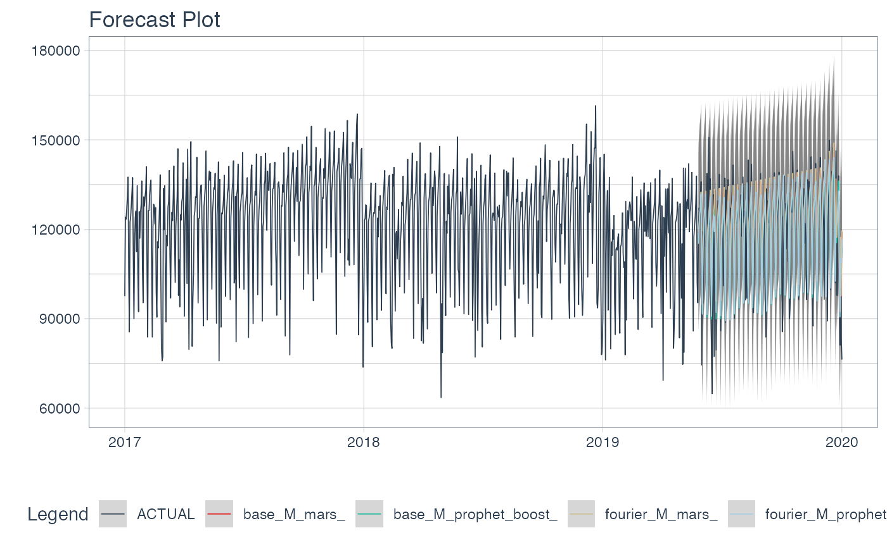
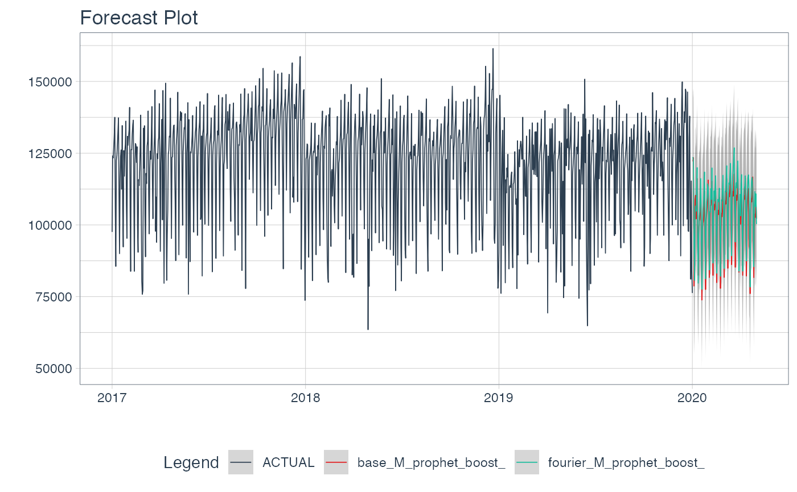

## Loading required package: dplyr##
## Attaching package: 'dplyr'## The following objects are masked from 'package:stats':
##
## filter, lag## The following objects are masked from 'package:base':
##
## intersect, setdiff, setequal, union##
## Attaching package: 'recipes'## The following object is masked from 'package:stats':
##
## step
data <- sknifedatar::data_avellaneda %>% mutate(date=as.Date(date)) %>%
filter(date<='2020-01-01' & date>='2017-01-01')
# Preprocessors -----------------------------------------------------------
recipe_date <- recipe(value ~ ., data = data) %>%
step_date(date, features = c('dow','doy','week','month','year'))
recipe_date_fourier <- recipe_date %>% step_fourier(date, period = 365, K=1)
# Models ------------------------------------------------------------------
mars <- mars(mode = 'regression') %>% set_engine('earth')
prophet_boost <- prophet_boost(mode = 'regression') %>% set_engine("prophet_xgboost")
wfsets <- workflow_set(
preproc = list(base = recipe_date,
fourier = recipe_date_fourier),
models = list(M_mars = mars,
M_prophet_boost = prophet_boost),
cross = TRUE)
wfsets ## # A workflow set/tibble: 4 x 4
## wflow_id info option result
## <chr> <list> <list> <list>
## 1 base_M_mars <tibble [1 × 4]> <opts[0]> <list [0]>
## 2 base_M_prophet_boost <tibble [1 × 4]> <opts[0]> <list [0]>
## 3 fourier_M_mars <tibble [1 × 4]> <opts[0]> <list [0]>
## 4 fourier_M_prophet_boost <tibble [1 × 4]> <opts[0]> <list [0]>
# Workflowsets fit --------------------------------------------------------
wffits <- modeltime_wfs_fit(.wfsets = wfsets,
.split_prop = 0.8,
.serie=data)## ## ── MODEL: base_M_mars## ✓ Training finished OK.## ## ── MODEL: base_M_prophet_boost## Disabling daily seasonality. Run prophet with daily.seasonality=TRUE to override this.## ✓ Training finished OK.## ## ── MODEL: fourier_M_mars## ✓ Training finished OK.## ## ── MODEL: fourier_M_prophet_boost## Disabling daily seasonality. Run prophet with daily.seasonality=TRUE to override this.## ✓ Training finished OK.## ## ── 4 models fitted ♥ ───────────────────────────────────────────────────────────## ## ── 0 models deleted x ──##
wffits## # A tibble: 4 x 10
## .model_id .model_desc .type mae mape mase smape rmse rsq .fit_model
## <chr> <chr> <chr> <dbl> <dbl> <dbl> <dbl> <dbl> <dbl> <list>
## 1 base_M_ma… EARTH Test 9901. 9.30 0.598 8.66 15187. 0.260 <model_ti…
## 2 base_M_pr… PROPHET W/ … Test 10270. 9.29 0.620 8.99 15147. 0.270 <model_ti…
## 3 fourier_M… EARTH Test 9944. 9.35 0.600 8.69 15236. 0.260 <model_ti…
## 4 fourier_M… PROPHET W/ … Test 10068. 9.14 0.608 8.76 14719. 0.291 <model_ti…
modeltime_wfs_forecast(.wfs_results=wffits,
.series = data,
.split_prop = 0.8) %>%
plot_modeltime_forecast(.line_size=0.3, .interactive=FALSE)## Warning in max(ids, na.rm = TRUE): no non-missing arguments to max; returning -
## Inf
ranking <- modeltime_wfs_rank(wffits, 'rsq')
ranking## # A tibble: 4 x 11
## .model_id rank .model_desc .type mae mape mase smape rmse rsq
## <chr> <int> <chr> <chr> <dbl> <dbl> <dbl> <dbl> <dbl> <dbl>
## 1 fourier_M_ma… 1 EARTH Test 9944. 9.35 0.600 8.69 15236. 0.260
## 2 base_M_mars 2 EARTH Test 9901. 9.30 0.598 8.66 15187. 0.260
## 3 base_M_proph… 3 PROPHET W/ XG… Test 10270. 9.29 0.620 8.99 15147. 0.270
## 4 fourier_M_pr… 4 PROPHET W/ XG… Test 10068. 9.14 0.608 8.76 14719. 0.291
## # … with 1 more variable: .fit_model <list>
# Select best model -------------------------------------------------------
wfbests <- modeltime_wfs_bestmodel(.wfs_results = wffits,
.metric='rsq',
.model = "top 2",
.minimize = FALSE)
wfbests## # A tibble: 2 x 4
## .model_id rank .model_desc .fit_model
## <chr> <int> <chr> <list>
## 1 fourier_M_prophet_boost 1 PROPHET W/ XGBOOST ERRORS <model_time [1 × 3]>
## 2 base_M_prophet_boost 2 PROPHET W/ XGBOOST ERRORS <model_time [1 × 3]>
# Refit -------------------------------------------------------------------
wfrefit <- modeltime_wfs_refit(.wfs_results = wfbests, data)## Disabling daily seasonality. Run prophet with daily.seasonality=TRUE to override this.
## Disabling daily seasonality. Run prophet with daily.seasonality=TRUE to override this.
# Future forecast ---------------------------------------------------------
modeltime_wfs_forecast(.wfs_results=wfrefit,
.series = data,
.h='4 months',
.split_prop = 0.8) %>%
plot_modeltime_forecast(.line_size=0.3, .interactive=FALSE)## Warning in max(ids, na.rm = TRUE): no non-missing arguments to max; returning -
## Inf